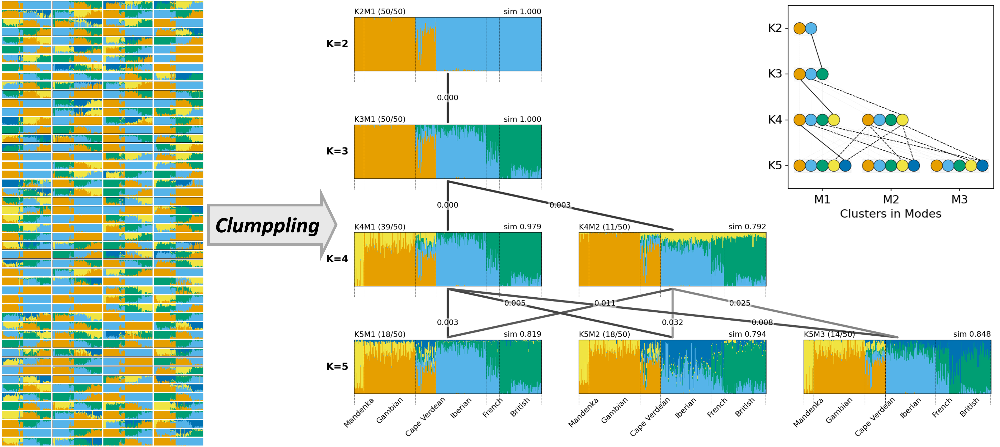
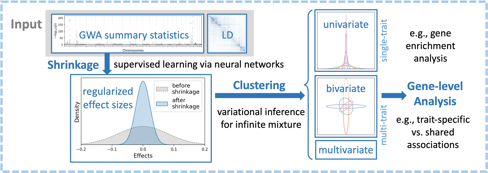
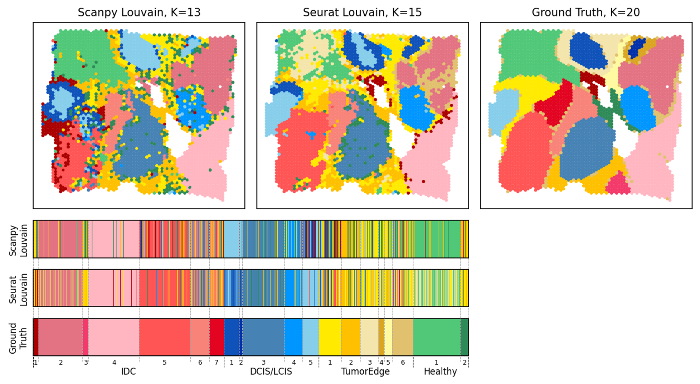
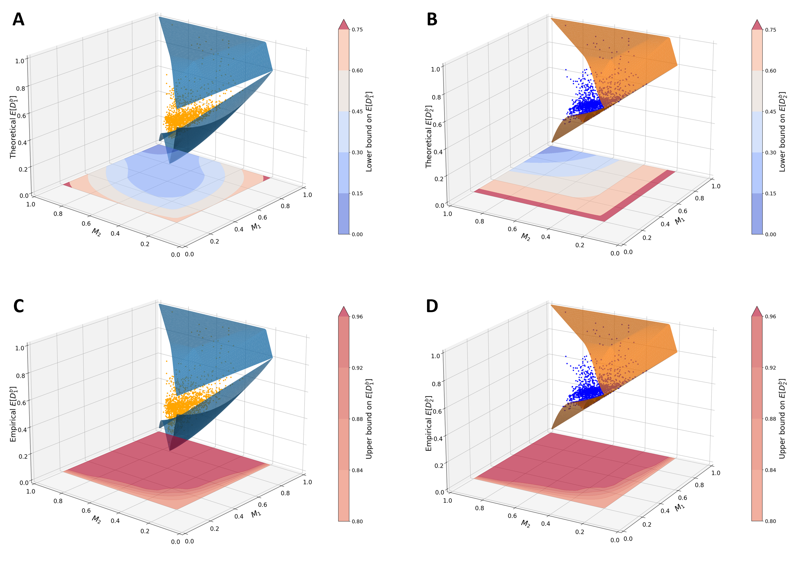

Methods
Population structure alignment
Tools and theory for aligning latent ancestries across repeated clustering runs and choices of K.
About me
I am a Postdoctoral Researcher at the Data Science Institute at Brown University, working with Sohini Ramachandran. Before that, I received my Ph.D. in Computational and Mathematical Engineering from Stanford University in 2023, where I was supervised by Noah Rosenberg.
My research focuses on method development in population genetics, computational biology, and data science. I use computational techniques such as machine learning, optimization, network analysis, and statistical inference to analyze complex genetic and genomic data.
Research overview

Tools and theory for aligning latent ancestries across repeated clustering runs and choices of K.

Machine-learning methods for effect-size shrinkage, gene-level aggregation, and pattern discovery.

Model comparison and cluster interpretation for robust single-cell analysis pipelines.

Mathematical analysis of interpretable dissimilarity measures in population-genetic settings.
Selected work
News